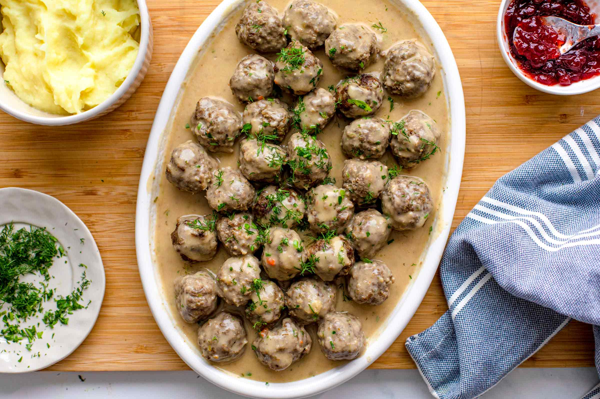

Stuffed Peppers

Description
You can try these fantastic Swedish Meatballs, or
Köttbullar as they call it, in every Ikea
restaurant worldwide. We never ate them there,
but we adore them nonetheless. So much so that we
even wrote a version of the recipe in our cookbook
Epic 30-Minute Roasts. These small, bite-sized
balls are made with ground beef (either beef or a
mixture of beef and pork), bread, onion, garlic,
and spices. In this recipe, we use spices like
cinnamon, nutmeg, and allspice, to create warm
flavors. This is the perfect family meal for all
seasons.
Ingredients
- 50 g (1 thick slice) white bread,
crust removed
- 80 g (1/3 cup) warm milk
- 1 small onion
- 1 tbsp parsley, chopped
- 1 clove of garlic
- 1 tsp BAM Spices Arabic Coffee Mixture
(or a mixture of nutmeg, cloves, cinnamon)
- 1 egg
- 600 g (1.4 pounds) ground beef
- 1 tsp salt
- 1/2 tsp black pepper, freshly coarse
- 1 tbsp olive oil, for drizzling
- 40 g (3 tbsp) butter
- 30 g (3 tbsp) flour
- 750 ml (3 cups) beef broth or water
- 60 g (1/4 cup) whipping cream
- 1 tbsp fresh parsley or dill, chopped
Steps
- Place a rack in the middle of the oven and
preheat the fan-assisted oven to
220 °C / 430 °F or a conventional oven to
230 °C / 445 °F. Line a large baking sheet
with parchment paper.
- In a bowl, combine bread cut into small pieces,
warm milk, diced onion, garlic, and chopped
parsley. Season with BAM Spices Arabic Coffee
Mixture (or 1 tsp homemade mixture made of
ground nutmeg, cinnamon, and cloves). Add an
egg and stir well with a spatula.
- Add the meat and the bread mixture to a large
bowl. Season with salt and pepper. Knead into
a smooth mixture and shape into 36 small
meatballs, approximately 3 cm or 1-inch in
diameter. Arrange the meatballs on the
prepared baking sheet and drizzle with olive
oil. Place in the oven and roast for 12
minutes at 220 °C / 430 °F (fan-assisted oven)
or at 230 °C / 445 °F in a conventional oven.
- Make the sauce. Place a large pan on
medium-high heat. Add the butter. When it
melts, add the flour and stir well with a
spoon. Cook for 5 - 8 minutes or until the
flour is golden-brown. Be careful not to burn
it. While whisking continuously with a whisk,
pour the beef broth to get a smooth sauce.
Bring to a boil and simmer for 3 minutes. Add
the whipping cream and season with salt and
pepper. Add the baked meatballs and simmer for
another 6 - 8 minutes. Serve with chopped
parsley and dill.